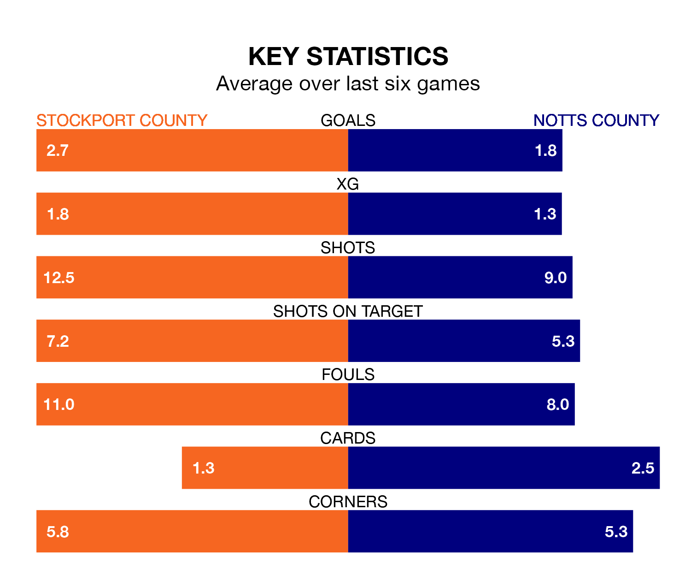

Friday's late match between Stockport County and Notts County promises to be one for the neutrals, as two of EFL League Two's most free-scoring sides go head-to-head.
Ahead of the game at Edgeley Park, the Hatters and Notts County sit top and joint-second in the goal-scoring charts, with 49 and 44 goals respectively.
Midfielder Isaac Olaofe leads the way for the home side, having bagged 13 goals in their 22 games to date.
And Macaulay Langstaff has been the main man in the opponents' penalty box for Notts County, with 14 goals.
Stockport are top of the table after 22 games, of which they have won 14 and drawn four, earning 46 points.
Notts County are five places behind Stockport County in sixth, with 11 wins and three draws putting them on 36 points.
In Ben Hinchiffe, the Hatters can rely on one of the league's safest pair of hands. He has kept nine clean sheets in his 22 appearances this season, and no 'keeper has prevented the opposition scoring more often in EFL League Two.
In the away team's net, Aiden Stone has two clean sheets in 15 games. He has conceded a goal every 59 minutes, 60% more often than the 94 minutes between goals for Hinchiffe.
The hosts are in reasonable form in EFL League Two, with three wins and two draws from their last six games.
With two wins and four losses over that period, Notts County's form is worse – they have taken six points from 18, compared to Stockport's 11.
In the last three years, Stockport and Notts County have played each other on four occasions. Stockport won one of them, Notts County two, and they drew once.
On average, the Hatters scored 1.2 goals and Notts County 1.0 in those matches.
Their last meeting was on March 15 2022, when Stockport won 3-0 at home.
Stockport's last match was on Saturday, a 8-0 win against Sutton United, with Paddy Madden (three), Ryan Croasdale (two), Joel Cotterill, Kyle Wootton and Olaofe getting the goals for the Hatters.
Notts County lost 3-1 against Harrogate Town last time out, also on Saturday, with Jodi Jones on the scoresheet.
Friday's match will be refereed by Seb Stockbridge, who has taken charge of eight EFL League Two games so far this season, issuing no red cards and booking 47 players. He has awarded four penalties.
The last Stockport game Stockbridge refereed was a 1-1 home draw with Bradford City on August 15. His last Notts County match was their 4-3 win at home against Forest Green Rovers on September 23.
